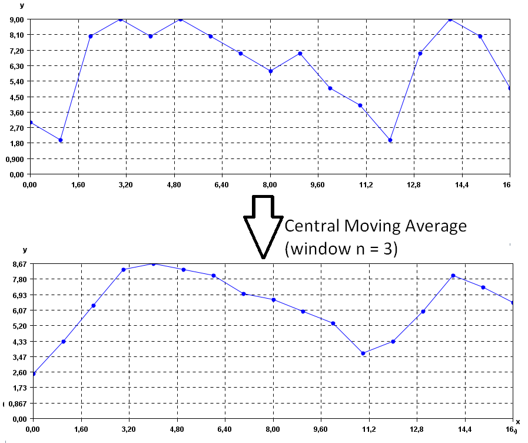
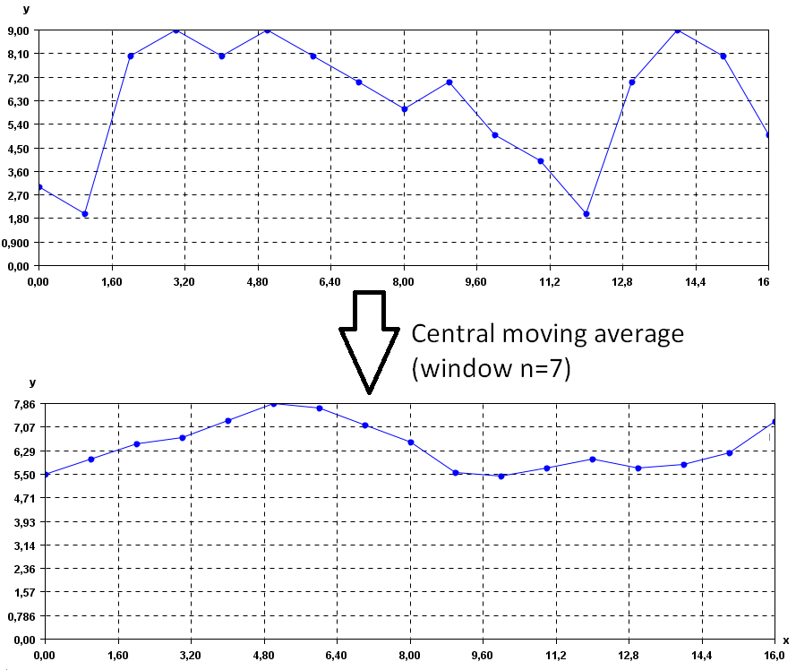

Calculate central moving average of time series (SPMF documentation)
This example explains how to calculate the central moving average of a time series using the SPMF open-source data mining library.
How to run this example?
- If you are using the graphical interface, (1) choose the "Calculate_central_moving_average_of_time_series" algorithm, (2) select the input file "contextMovingAverage.txt", (3) set the separator to the comma ',' (4) set the window size to 3, and then (5) click "Run algorithm".
- If you want to execute this example from the command line,
then execute this command:
java -jar spmf.jar run Calculate_central_moving_average_of_time_series contextMovingAverage.txt output.txt 3 ,
in a folder containing spmf.jar and the example input file contextMovingAverage.txt. - If you are using the source code version of SPMF, to run respectively this example, launch the file "MainTestCentralMovingAverageFromFileToFile.java"in the package ca.pfv.SPMF.tests.
What is the calculation of the central moving average for time series?
Calculating the central moving average is a simple but popular way of smoothing a time series to remove noise. It takes as parameter a window size w (a number of data point), which must be an odd number greater than 1. Then, for a time series, it replaces each data point X by the average of X with the (w-1)/2 data points appearing before, and the (w-1)/2 data points appearing after.
What is the input of this algorithm?
The input is one or more time series. A time series is a sequence of floating-point decimal numbers (double values). A time-series can also have a name (a string).
Time series are used in many applications. An example of time series is the price of a stock on the stock market over time. Another example is a sequence of temperature readings collected using sensors.
For this example, consider the following time series:
| Name | Data points |
| ECG1 | 3,2,8,9,8,9,8,7,6,7,5,4,2,7,9,8,5 |
This example time series database is provided in the file contextMovingAverage.txt of the SPMF distribution.
In SPMF, to read a time-series file, it is necessary to indicate the "separator", which is the character used to separate data points in the input file. In this example, the "separator" is the comma ',' symbol.
To calculate the central moving average, it is necessary to provide a window size w, which is a number of data points. In this example, this parameter will be set to 3 data points. Thus, the central moving average will be calculated for each of the above time series using a window size of 3 data points.
What is the output?
The output is the moving average of the time series received as input. The moving average is calculated by replacing each data point X in a time series by the average of X with the (w-1)/2 data points appearing before, and the (w-1)/2 data points appearing after.
For example, in the above example, if the window size is set to 3 data points, the result is:
| Name | Data points |
| ECG1_CEMAVG | 2.5,4.333333333333333,6.333333333333333,8.333333333333334,8.666666666666666,8.333333333333334,8.0,7.0,6.666666666666667,6.0,5.333333333333333,3.6666666666666665,4.333333333333333,6.0,8.0,7.333333333333333,6.5 |
To see the result visually, it is possible to use the SPMF time series viewer, described in another example of this documentation. Here is the original time series and the central moving average for window = 3.

It is possible to see that the time series are less noisy.We can increase the values of the window parameter to obtain a yet more smooth time series. For example, if we set window = 7:

Input file format
The input file format is defined
as follows. It is a text file. The text file contains one or more time series. Each time series is represented by two lines. The first line of the file contains optional metadata @FILETYPE="Time series database" indicating that this is a timeseries database file.
The second line contains optional metadata about the source of the file.
The third line
contains the string "@NAME=" followed by the name of the time series. The fourth line is a list of data points, where data points are floating-point decimal numbers separated by a separator character (here the ',' symbol).
Then, the following lines may contain additional time series described in the same way.
For example, the input file of the previous example, named contextMovingAverage.txt is defined as follows:
@FILETYPE="Time series database"
@SOURCE="SPMF SOFTWARE https://philippe-fournier-viger.com/spmf/"
@NAME=ECG2
3,2,8,9,8,9,8,7,6,7,5,4,2,7,9,8,5
Consider the last two lines. It indicates that the first time series name is "ECG2" and that it consits of the data points: 3,2,8,9,8,9,8,7,6,7,5,4,2,7,9,8, and 5.
But note that it is possible to have more than one time series per file. For example, this is another input file called contextSax.txt, which contains 4 time series.
@FILETYPE="Time series database"
@SOURCE="SPMF SOFTWARE https://philippe-fournier-viger.com/spmf/"
@NAME=ECG1
1,2,3,4,5,6,7,8,9,10
@NAME=ECG2
1.5,2.5,10,9,8,7,6,5
@NAME=ECG3
-1,-2,-3,-4,-5
@NAME=ECG4
-2.0,-3.0,-4.0,-5.0,-6.0
Output file format
The output file format is the same as the input format. For example, there is the result for window = 3:
@FILETYPE="Time series database"
@SOURCE="SPMF SOFTWARE https://philippe-fournier-viger.com/spmf/"
@NAME=ECG2_CEMAVG
2.5,4.333333333333333,6.333333333333333,8.333333333333334,8.666666666666666,8.333333333333334,8.0,7.0,6.666666666666667,6.0,5.333333333333333,3.6666666666666665,4.333333333333333,6.0,8.0,7.333333333333333,6.5
Implementation details
It is sometimes said that the central moving average of a time series should not include the first (w-1)/2 or last (w-1)/2 points because for these points there is not enough previous or suceeding points for calculating the central average with w points. In this implementation, a design decision is that the moving average should contain as many data points as the original time series. To calculate the central moving average of the first(w-1)/2 points, it was decided to ignore non existing previous points for the calculation, and for the last (w-1)/2 points, it was decided to ignore non existing succeeding points for the calculation.
Note that in SPMF, other variations of the moving average called the "cumulative moving average" and "prior moving average" are also offered.
Where can I get more information about the central moving average?
The central moving average is a basic operation for analyzing time series. It is described in many websites and books.
<< Return to table of contents of SPMF documentation
Copyright © 2008-2026 Philippe Fournier-Viger. All rights reserved.